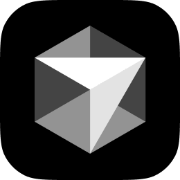

오른쪽 Dock에서 앱을 선택해 포트폴리오를 열어보세요.
자기소개, 경력, 포트폴리오, 기술스택 앱을 열어 확인할 수 있습니다.
자기소개, 경력, 포트폴리오, 기술스택 앱을 열어 확인할 수 있습니다.
마우스 커서가 Dock의 해당 앱으로 이동한 뒤 관련 창을 보여줍니다.
여러 창을 띄워 비교하거나, Dock 아이콘을 다시 눌러 다음 내용을 볼 수 있습니다.
Django와 DRF 기반 API, 인증/권한, 데이터 모델링, Celery·Redis 비동기 작업을 실제 서비스 요구사항에 맞게 설계하고 운영합니다. 외부 AI API와 장애 가능성이 있는 작업을 사용자가 기다리지 않는 제품 흐름으로 연결하는 일에 강점이 있습니다.
이미지·음성 생성 AI 툴, Figma Plugin, Groupware 등에서 API와 비동기 처리, 인증 기반 워크플로우를 개발했습니다.
리워드 결제, 전력 소모 예측 AI, 전자지갑, 예술 플랫폼처럼 데이터 정합성과 운영 안정성이 중요한 백엔드 기능을 다뤘습니다.

Cursor// experience tree
API, 인증/권한, 데이터 구조, AI 생성 파이프라인, 비동기 작업 처리 개발 및 운영
리워드 결제, 전력 소모 예측 AI, 전자지갑, 예술 플랫폼 백엔드 API 개발
Python 기반 기업 연계 교육 과정, 프로젝트 평가 종합 성적 우수상 수상
AI 생성, 예측 자동화, 비동기 작업을 서비스 요구사항에 맞게 연결해 사용자가 기다리지 않는 백엔드 흐름을 구성했습니다.
안녕하세요, 김혜원입니다.
백엔드 API, 데이터 모델링, 비동기 처리, AI 워크플로우 연동에 관심이 있다면 아래 링크로 제 작업을 더 확인할 수 있습니다.
github.com/hyewwon